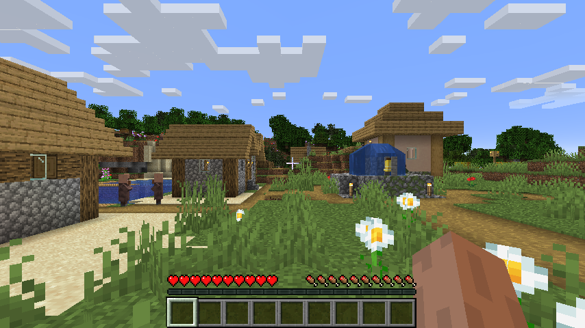
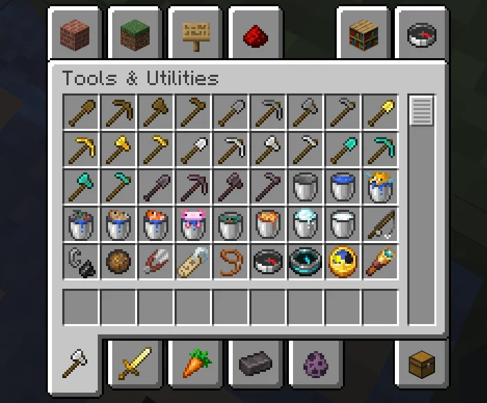
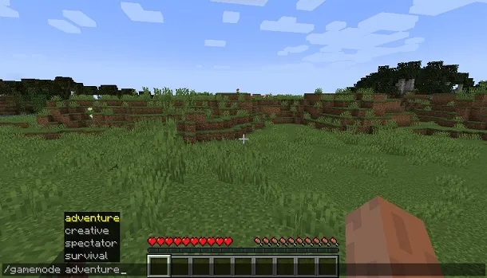
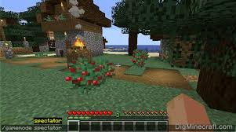

Modalità di Gioco
Scopri le diverse modalità per giocare a Minecraft e come influiscono sull’esperienza di gioco.
Survival (Sopravvivenza)
Modalità classica: devi raccogliere risorse, costruire e sopravvivere contro mob ostili. Gestisci fame e salute.


Creative (Creativa)
Modalità senza limiti: risorse infinite, volo libero, nessun danno subito. Perfetta per costruire e sperimentare.
Adventure (Avventura)
Modalità pensata per mappe personalizzate: permette di interagire solo con blocchi specifici e seguire storie.


Spectator (Spettatore)
Modalità per osservare senza interagire, perfetta per vedere il mondo senza influire su di esso.